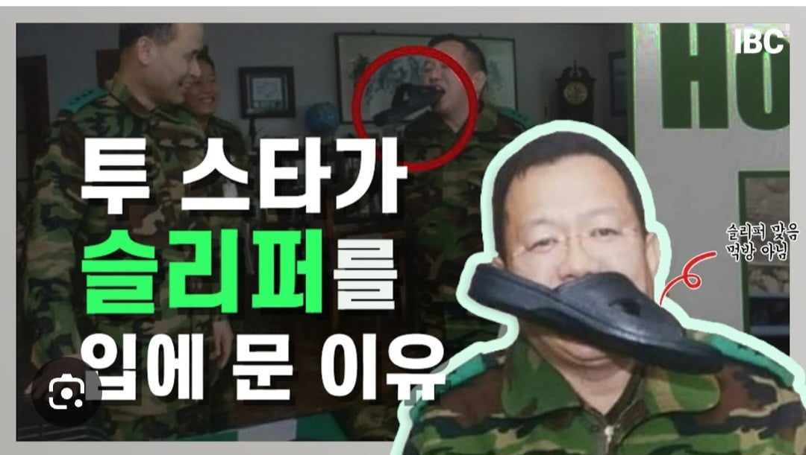
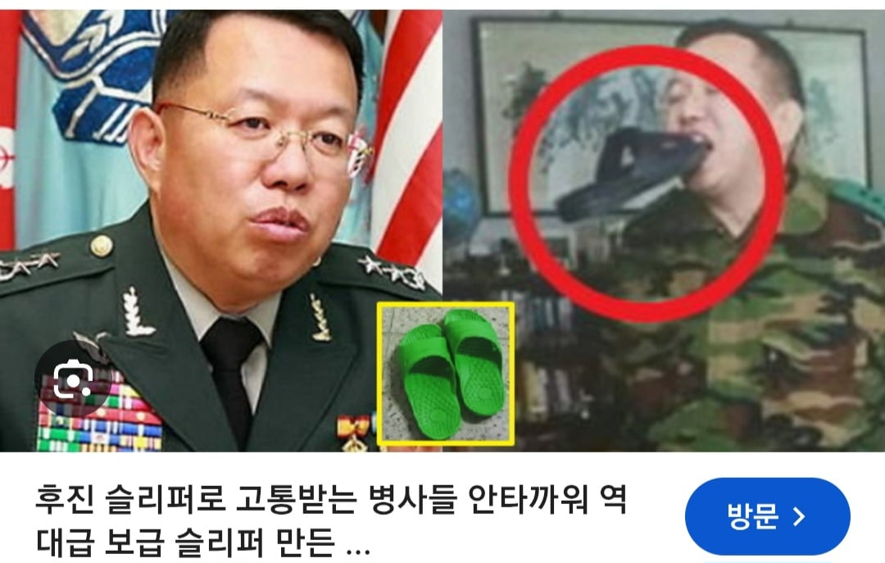

https://www.news1.kr/amp/diplomacy/defense-diplomacy/6304595
선 요약
1. 북한 지뢰 맞지만 고의성 입증 책임 쉽지 않아
2. 현장 늦장 조사 관련 증거 유실 가능성 없음
3. 현재 일부 군사분계선 라인이 모호함(사건 발생 이유일 수도)
참고로 전인범 전 사령관은 이걸로 유명한 사람


https://www.news1.kr/amp/diplomacy/defense-diplomacy/6304595
선 요약
1. 북한 지뢰 맞지만 고의성 입증 책임 쉽지 않아
2. 현장 늦장 조사 관련 증거 유실 가능성 없음
3. 현재 일부 군사분계선 라인이 모호함(사건 발생 이유일 수도)
참고로 전인범 전 사령관은 이걸로 유명한 사람


27사단장일 때 병장 전역자들 전역식도 해주고, 스마트하고 참군인이라 존경했던 분인데... 정치에 발을 담그더니(그나마도 헛물 켜다 나가리됐으면서) 저런 언행을 하시니 진심으로 안타깝고 실망스럽네.
고의성 입증이 어렵다는게 군사분계선이 모호한구간이라 그럴수 있다는게 맥락같은데
니들 지뢰 왜깔았냐? 이말에 니들이 넘어와놓고 왜 ㅈㄹ 식으로 나오니까 하는말아님?
아구창 의사랑 비슷하게 생겼네
▶전인범: 제가 이제 군 출신으로서 국방부 기자들이 얼마나 무서운 사람들이라는 걸 잘 알고 있습니다. 어떤 때는 북한군이 주적이지만 국방부 기자들이 더 무서운 경우가 있습니다. 그렇게 날카롭고 굉장히 파고드는 그런 분들인데 그런 국방부 기자들을 설득하는 그 능력이 신뢰를 바탕으로 해서 돼야 된다고 생각을 해요. 그리고 기자단을 설득하지 못하는 것은 아예 하지 않는 게 저는 맞다고 생각합니다. 그런데 최근에 이렇게 국방부에서 보면은 신뢰와 설득보다는…….
국방부 쉴드치는 새끼들 이제 사라지겠네 ㅋㅋㅋㅋㅋㅋㅋㅋ
▷신성철: 네네. 그러니까 국방부에도 계셨다고 말씀해 주셨지만 조금 더 신속하게 발표를 하고 조사를 한다면은 좀 어떤 스케줄로 이루어졌을까요?
▶전인범: 글쎄요. 뭐 정확하게 내부 사정을 잘 모르니까 말하기는 좀 그렇지만 한 24시간 정도는 좀 더 앞당길 수 있지 않았을까 이런 생각이 듭니다.
전임범 장군님 말씀 나왔으니까 국방부 쉴드치는 새끼들 아가리하셈
밟은 사람이 잘못?
그 얘기가 아님
고의가 아니었다고 쳐도 MDL과 MDL준수를 각인시킬 필요는 있지. 결코 그냥 넘어갈 수는 없음.
고의냐 아니냐는 결국 대응 수위만 바꿀 뿐이라는거임
ㅇㅇ 결국 그런 이야기지. 법정에서 상대가 무조건 잘못했어요 한다고 되는게 아니라 정확히 뭘 잘못했고 그런걸 따져야지 원하는 결과를 얻는건데. 외교적 언어가 있고 우리가 대응할때도 충분히 빌드업 밟고 하는건데.
여기 개붕이들은 그런거 생각 안하고 급발진만 밟는다고 뭐가 해결되는지 아나봄.
당연히 북한 잘못은 맞지만 그걸 대응을 잘 하기 위해서는 정확히 짚어야 하는데 말야.
군사분계선에 분쟁이 있던 지점인가..?
일본이 동해에 본인 해역이라 하는곳에 기뢰깔고 독도수비대 배가 폭파되는 사태가 발생하면 아 거 의도없는 기뢰일뿐입니다 하고 납득이 갈까?
호르무지 해엽 지나가다 기뢰로 침몰해도 납득해야지ㅋㅋㅋㅋ
저분이 하는말은 믿을만하지
호르무지 해엽 기뢰로 한국유조선 침몰해도
다 아닥해라
나도 JSA 근무할때 알게된건데
MDL 근접 수색 나가면 군사분계선이 무슨 선이나 철책으로 되어있는게 아님. 말뚝을 1300 여개 박은걸 죽 늘어뜨려놓은 건데 그러다보니 어느 구간은 말뚝이 유실되서 구분이 어려움. 아마 전 장군님은 그거 말하시는 듯 하다
헤이헤이헤이